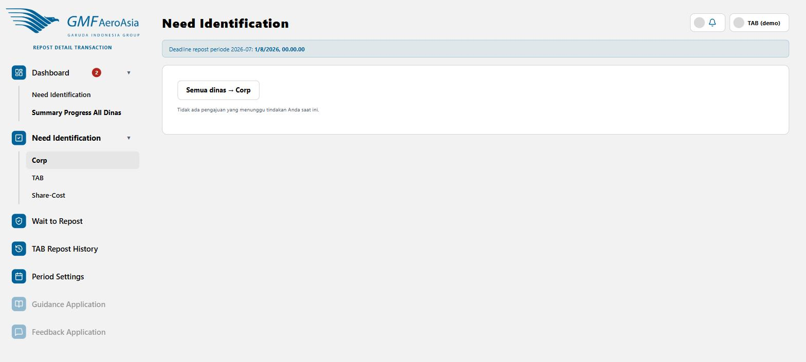

Dinas Corp tidak memiliki PIC sendiri, jadi hanya TAB yang bisa Confirm/Reject transaksi yang ditujukan ke Corp. Halaman ini persis sama seperti Detail Confirmation milik PIC (lihat panduan "Detail Confirmation"), hanya saja diakses oleh TAB atas nama Corp — langkah Confirm/Reject/Submit-nya sama persis.